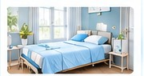

Clínica de salud mental
Hospitalización día e internación en salud mental.
Conoce más →Brindamos atención integral y especializada, con un equipo humano comprometido con tu bienestar emocional y calidad de vida.
Atención cercana y profesional para cada etapa del proceso de cuidado.

Hospitalización día e internación en salud mental.
Conoce más →Home Care: cuidado y acompañamiento en el hogar, según las necesidades del paciente.
Conoce más →Atención orientada al alivio del sufrimiento y a la calidad de vida.
Conoce más →Atención ambulatoria y especializada en salud mental.
Conoce más →Acompañamiento y cuidado continuo para pacientes que requieren asistencia permanente.
Conoce más →Más que servicios, acompañamos vidas. Llevamos cuidado integral al hogar, con continuidad, calidez y humanización.
En Clínica de Salud Mental MEDICAR trabajamos con un enfoque humano, ético y profesional. Nuestro propósito es acompañar a cada persona y su familia, promoviendo el bienestar y una atención respetuosa.
Brindar atención integral con calidad, calidez y profesionalismo.
Ser una institución referente por su compromiso con la salud y el bienestar.
Respeto, empatía, ética, compromiso y humanización.
Por tu equilibrio y bienestar
Un equipo interdisciplinario comprometido con el cuidado, la escucha y el bienestar de cada paciente.
Cuéntanos cómo podemos contactarte y qué servicio te interesa. Nuestro equipo recibirá tu solicitud por WhatsApp para orientarte sobre los pasos siguientes.
¿Prefieres hablar directamente? Escríbenos al 304 496 0616.
Consulta la información institucional y los documentos que MEDICAR autorice para publicación.
Estados financieros e informes contables disponibles para consulta pública.
Documentos por publicarInformes institucionales y resultados de gestión correspondientes a cada vigencia.
Documentos por publicarInformación e indicadores institucionales que correspondan y estén autorizados para divulgación.
Documentos por publicarInformes, presentaciones y soportes institucionales de rendición de cuentas, cuando aplique.
Documentos por publicarLos responsables institucionales podrán remitir evidencias por período mediante un formulario privado. Cada archivo será revisado antes de autorizar su publicación.
La publicación de documentos se realizará únicamente después de su revisión y aprobación institucional. No se deben cargar historias clínicas, datos de pacientes, credenciales ni información reservada.
Estamos aquí para escucharte y brindarte información.